Software Engineering
SCC. 140: Creative Technology
UX: Creative Introduction
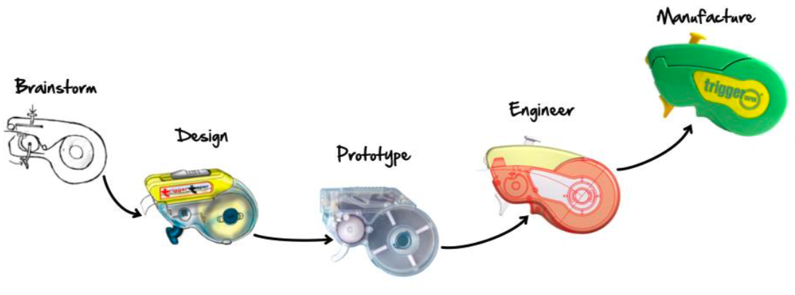
Engineering perspective
- Engineers tend to think of how the product is going to be made, this will be thought of before the design is in place. Diagram on the right illustrates this process.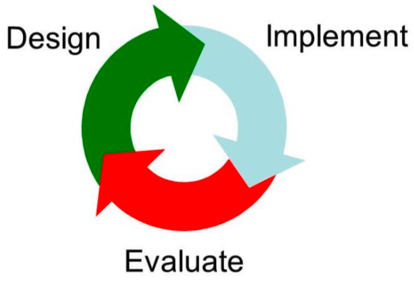
- Design process, 3 cycles - Design, Implement and Evaluate.
- Creative designs e.g. Chopstick stylus, water-saving baths, augmented cooking.
Enemies of Creativity |
“It has never been done before” | - There is no competition, do what you want.
- Simplify the design if it is too hard.
- Figure out a reason why it has never been done before and challenge it, construct a workaround.
|
“It has been done before” | - Iterate the design, improve the old and replace it with current.
- Be persistent about the approach.
- Copycat effect - doesn’t mean it can never be done again.
|
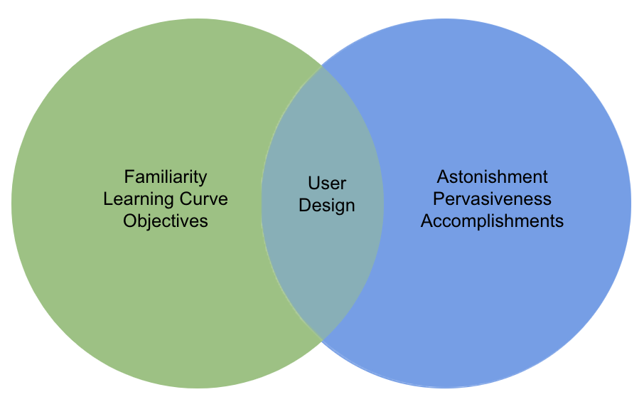
User experience
- Includes all aspects of the end-user’s interaction with the company, services and products.
- “Users don’t know what they want” - bullshit.
- “I know better than my users” - eventually.
- Ensure that you know your user and their needs.
- User doesn’t want to spend time figuring out how to do something (bad UX). Some companies can get away with it e.g. Apple removing ports, although annoying, customers adjusted.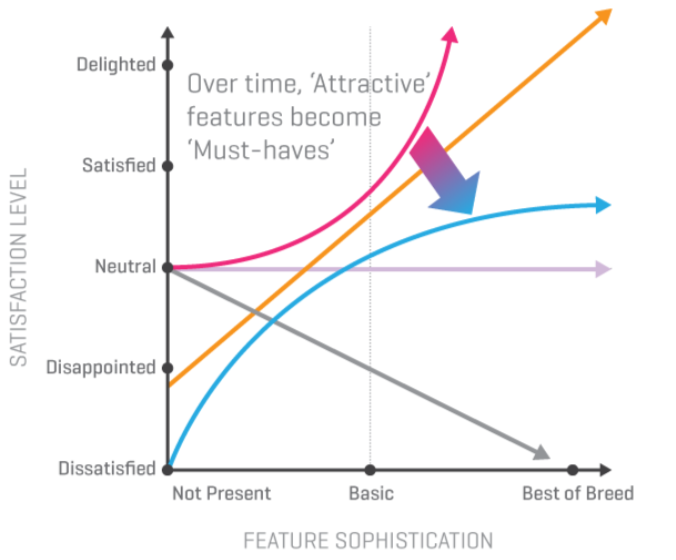
- Kano Model outlines how a user may be feeling when they use a product e.g. if customer orders good quality food, and unexpectedly the company offers free delivery to their house, their satisfaction level would go from ‘neutral’ to ‘delighted’.
UX: Understanding Users
Socio-technical
- Understanding both social and technical factors.
- Study users to create something useful, look at current problems and figure out a way to overcome them e.g. surgeons can now use kinect to navigate around images of patient during the surgery, without having to leave the sanitised area.
- Can be used for evil, understanding user patterns allows developers to trick people into doing things e.g. spending money, gym memberships often include long process to cancel, which puts people off and continue with the membership.
Requirements (something product must do, or quality product must have) |
Functional | What the system must do and how it will be implemented e.g. function and data requirements. |
Non-functional | Quality that system must have, concerns the way the system functionality operates. |
Domain | Application domain of system that reflect characteristics of domain. |
Other | Aesthetics, usability, performance, maintainability, security, cultural acceptance, legal, context of use (social, business, technical, environmental). |
Requirements engineering | Early phases of software development, developing it correctly from the start rather than patching at the end. |
Requirements elicitation | Customers and designers discover, review, articulate and understand users’ needs, including evaluating constraints of system. |
Requirements analysis | Research reviewed by developers and stakeholders to agree definition of requirements to be included in documentation. |
Requirements validation | Detects problems with requirements before used as basis for development. |
Elicitation methods |
Questionnaires | Large number of participants, cheap, fast. Construction is difficult, one-way. | Interviews | SI is cheaper to do, but interviewers actions may influence. UI provides more detailed answers, costly. |
Ethnographic (immerse) | Provides cultural data. May not be time efficient. | Workshop | Fast, rich data. Group discussions may inhibit sensitive issues talk. |
UX: Motivation and Emotion
Motivation
- Any stage or condition that might eventually move organism to act, cognitive or physiological.
- Extrinsic: money rewards, gifts, positive feedback
- Intrinsic: interests and challenges, tasks, trials taken for own sake.
- Theory of human motivators suggest factors such as power, curiosity play a large role Reiss (2004).
Measuring motivation |
Challenges: Hidden aspects of unconscious motivation. | Direct: Self-reports, questionnaires, inventories made by researcher. | Indirect: Thematic Apperception Test (TAT) - form stories from pictures. |
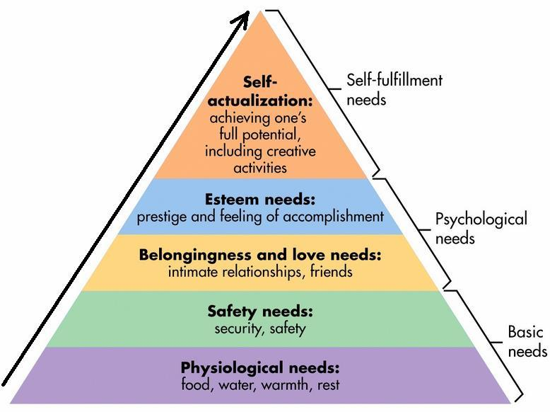
Maslow’s theory - hierarchy of needs (1943)
- Allow creativity, developing skills, fun.
- Successful task completion including rewards and praise.
- Promote interaction between users.
- Privacy, confidentiality and ownership.
- Avoid unnecessary interruptions i.e. ergonomic design, provide closure and possibility to pause and resume.
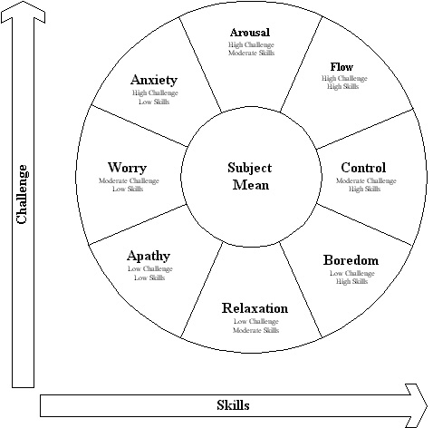
Csikszentmihalyi’s theory - flow
- Immediate feedback on success attempts to reach goal.
- Total concentration and focused attention, open to new things, positive feelings.
- Activity is perceived as rewarding.
Norman Emotional Design
- Emotional state changes how we think - frightened, narrow focus, body tenses muscles and sweats, less tolerant.
- When happy, we’re less focused and body relaxes - more likely to overlook minor problems and be more creative.
- Create products that adapt according to people’s different emotional states e.g. when user is angry, should the product be more informational than creative?
Affective Computing
- Develop interactive systems.
- Recognise human emotions and adapt accordingly
- Use sensors (wearable technology) to capture physiological measures (face, body, gesture, voice) - use algorithms to adapt (81% success rate with 8 main emotions).
UX: User Experience
Human Computer Interaction (HCI)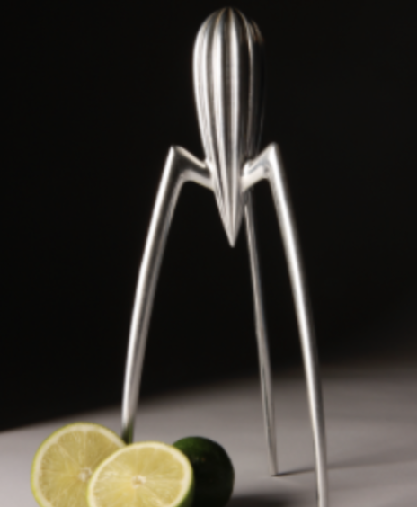
- People use combination of devices to fit their everyday life - includes human emotions, how people feel when using devices e.g. happiness when we use phones to be in touch with friends and family.
- Aesthetics - human appreciation of beauty and how things are sensed, felt, judged. Complex relationship - some products aesthetically pleasing but not always work.
- Classical aesthetics - clean, clear, pleasant, symmetrical.
- Expressive aesthetics - original, sophisticated, fascinating, creative.
Experience
- Experience is result of interaction between live creature and experienced object.
- Experience has beginning and end.
- Experience has unity that gives it a name.
- User ‘does something’ to the object, in consequence they ‘undergoes something’.
Characteristics of Experience |
Subjective | Experiences are processed differently by each human being. May differ from person to person. |
Holistic | Take into account sensorial, cognitive, emotional factors (look at how those factors combine to form an experience). |
Temporal | Experience must have a beginning and end, logical process. |
Actively Constructed | The engagement must make sense to an individual, otherwise they may become frustrated, thus, less interested. |
Engagement
- Authenticity - keeping things ‘real’ - misleading information may invalidate reality
- Adaptivity - reaction to change (different levels of difficulty) - feature removal
- Narrative - telling a good story - character of story must fit within set boundaries
- Immersion - feeling involved - having say in decision process
- Flow - smooth change, moment to moment - upgrading phones
Socio-pleasure: Driven from relationships with others, friends, family, society (phone). | Psycho-pleasure: Cognitive and emotional relations pertaining to goal for using system (word-processor produces documents) |
Ideo-pleasure: Taste (colour), values (ethics), aspirations (career) e.g. type of car | Physio-pleasure: Body and sensory organs - touch, taste, smell (new car smell). |
Human responses
- Visceral Design - innate, biological responses (instinct).
- Behavioural Design - learned responses, routine behaviour.
- Reflective Design - responses involve self examination e.g. pride of ownership.
Experimental framework |
Sub-consciousness | Do not compete for user’s attention and thinking processes. |
Cognition | Experiences that require users to think about they are doing. |
Narrative | Represents meaningful experiences for user, set of features and affordances of product offers narrative of use. |
Storytelling | User interacts with subset of features, based on usage situation, prior experience and current emotional state to make a unique and subjective story. |
Technology as Experience (McCarthy and Wright, 2004)
- Sensual - overall atmosphere of design and texture e.g. look, feel of phone, feeling of buying most beautiful device in the shop.
- Emotional - emotions encountered during the experience e.g. satisfaction feeling buying plainer phone that is half the price but as beautiful as the most expensive one.
- Spatio-temporal - experiences bound to a particular place and time.
- Compositional - different elements come together to form holistic experience.
Measuring User Experience |
Experience Sampling (time sampling) - fill out reports at random intervals, notified. | Reduces effects of intrusive observers and memory biases (asking currently). Less time consuming than other field studies. Questionnaires must be brief and be carried around with participants at all times. Certain events only form pattern in bigger samples. |
Cultural Probes - gathers inspirational data about people’s lives and ideas. | Gathers information with minimal influence on their actions (only when explored process takes places intermittently or long time. Large time investment from participants. Cannot be monitored closely, thus problems may not be dealt with during the study. |
User Experience Design Process
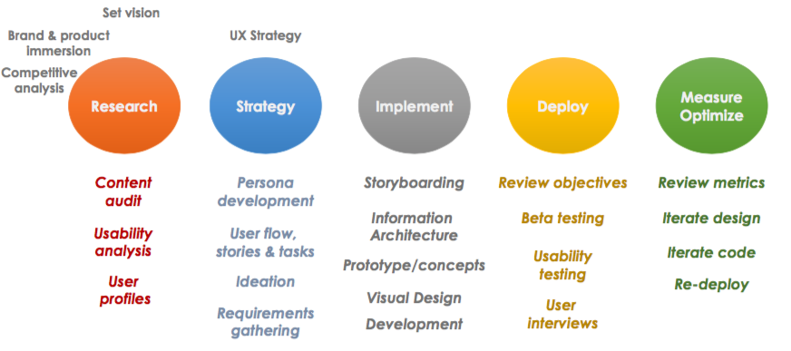
UX Planes
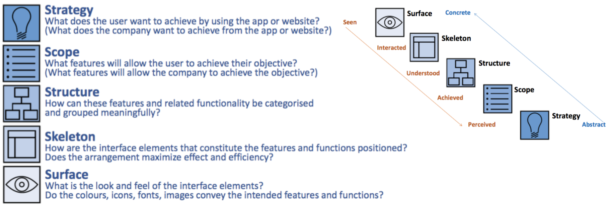
Usability
- Extent of product being user friendly and efficient to complete a task.
- Good usability shouldn’t require a lot of explanation to use product e.g. Apple’s products do not have detailed manuals as they believe their products are intuitive.
- On the other hand, some products designed to make task completion difficult resulting in higher expenditure e.g. booking a ryanair flight.
- Some groups of people need more attention to usability, however, often neglected.
- People with disabilities may need extra attention to detail e.g. having cooker dongles reachable from a wheelchair.
Nielsen’s Model | Usability heuristics |
Learnability | Ability of technology to be learned so user able to work with system, in a short period of time. | 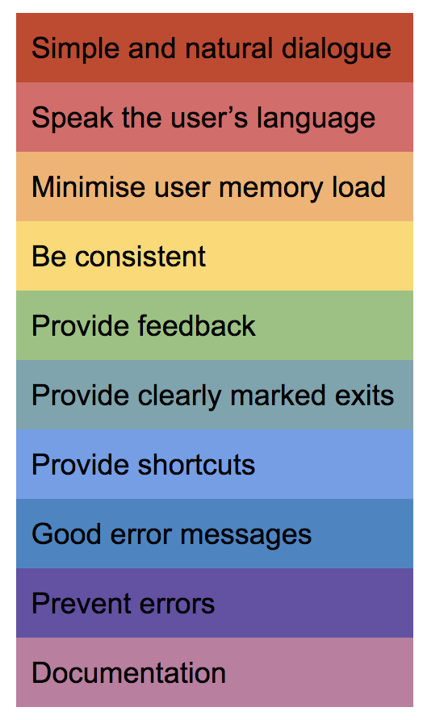 |
Memorability | Possibility to re-learn or remember how to use system quickly when system is used again after period of time. |
Efficiency | Relation between expended resources and achieved goals. |
Satisfaction | Subjective user attitude to the product. |
Errors | Independent attribute of usability |
Measurement
- Attitude rating scales - series of statements “I like this product” Agree, Disagree.
- System Usability Scale (SUS) - series of statements.
- Software Usability Measurement Inventory (SUMI) - series of statements.
- Questionnaire for User Interaction satisfaction (QUIS) - access subjective satisfaction with specific aspects of HCI.
UX: Prototyping
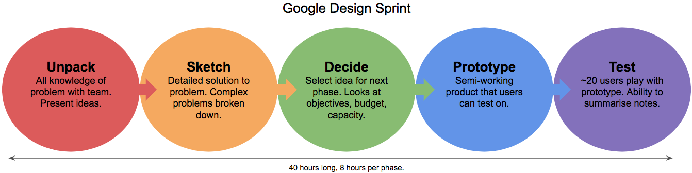
Prototype
- Process of building to test designs, concepts without having to build a complete functional system.
- Lock in syndrome: makes team think of ways to implement into design.
- Problem identification: finds issues early in the process where changes are easier to apply.
- Feature identification: find the most desirable features through testing product.
- Speed: Rapidly evaluate multiple iterations of design.
Important aspects of prototyping (PQR STU) |
Proof | Not the final product |
Quick | Do it quickly |
Rough | No polishing, just basic functionality |
Simulate | Simulate features including back-end and decision logic. |
Test | If design choices are sensible |
User | Be a critic of the prototype, not the user |
Stages of prototyping
- Storyboarding
- Sketching
- Paper prototypes
- Digital mockups
- Static UI
- Dynamic UI
- Support features
Soft Prototyping | Hard Prototyping |
Underlying hardware exists already, best suited for mobile apps, web pages, applications. | Hardware doesn’t yet exist, and hardware prototype is required to validate a certain theory. |
UX: Interaction Design
Overview
- Defines structure and behaviour of interactive systems.
- Focuses on the interaction between the user and product to achieve a given goal.
Goal Driven Design | Problem solving is the highest priority in order to satisfy the needs and desires of the end user. - Design comes first, the program second.
- Responsibility for the design and not the programming.
- Responsibility for the quality and satisfaction.
- Define one specific user for your product
- Work in teams of two or more for greatest productivity.
|
Usability Paradigm | - Three principle approach by Alan Dix et al:
Learning | Flexibility | Robustness. - Five principle approach by Nielsen and Schneiderman:
Learning | Efficiency | Memorability | Errors | Satisfaction. - Standard approach by ISO:
Learning | Understanding | Operability | Attractiveness | Compliance. |
Five Dimensions Model | Proposed by Smith and then extended by Silver. - 1D → Words: communicate with the end user
- 2D → Visual representation: everything that is not text
- 3D → Physical: hardware that user interacts with
- 4D → Time: measure progress
- 5D → Behaviour: perceived emotions by user during experience
|
Cognitive Psychology Model | - Mental models → image in users’ mind represents expectation of a system. The representation does not have to be perfect in order to be successful e.g. London Tube maps are not to scale yet they are very useful.
- Interface metaphors → use known actions e.g. users know that when they see a trash icon, it should remove something.
- Affordances → make it look like it’s designed to do something e.g. when users see a button, they know that they should be able to press it.
|
Waves of mobile computing
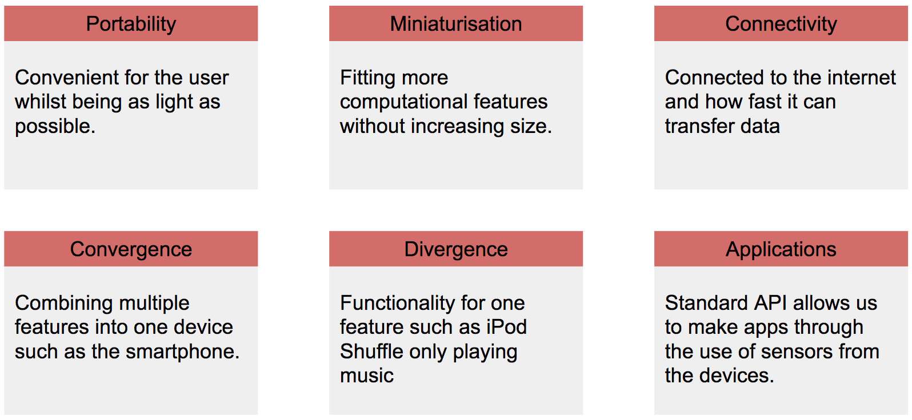
Elements for mobile interaction
- Scroll: Most frequent gesture (94% of users used 3 times within 10 minutes).
- Swipe: Understood well at the top of device, less so at the bottom (77%).
- Tap: Common gesture (72%), not the same as click as that would be instant, a tap has a 300ms delay.
- Pinch: Users are aware of this gesture but reluctant to use in many cases.
- Hamburger: Not very well understood amongst users.
- Bottom / Back Nav: The feature is desirable but not through use of arrows.
- Splash-modals: Annoying pop ups, they should be dismissed by clicking anywhere but on them, that is not usually the case.
UX: User Evaluation
Goals of Evaluation
- Understand if the system is useful.
- Understand how the system is used both for short and long periods of time.
- Understand if system produces enjoyable experience.
- Improve aspects of the interface and interaction.
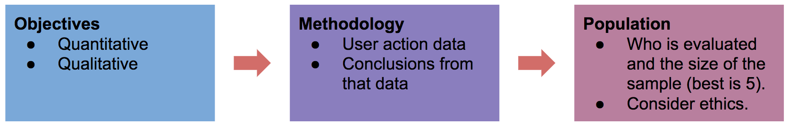
Hawthorne effect
- Subjects modify their behaviour as they are observed.
E.g. 1924 - 1933 warehouse study where experimenters modified working environments concluded increased productivity in all cases even with worse conditions. This was the result of being observed and not the conditions themselves.
Collection Methods | Description |
AB testing - testing two variants | - Allows us to run them live and can be remotely administered meaning cost effective.
- Difficult when many variants need testing.
|
Eye tracking - fixate where gaze occurs | - Can predict patterns of interaction and detect popular or ignored areas of the user interface.
- However, it’s an expensive process and is difficult to analyse effectively.
|
Physiological - focus on skin, brain and facial expressions | - Monitor sweat, blood pressure and heart rate.
- We can detect the emotion experienced by the user through the use of an EEG.
|
Card sorting - categorise info to form UI by user. | - Allows us to see how the user thinks a user interface should look like according to their needs.
- Different users may have a different idea of the UI.
|
UX: Heuristics
Heuristic evaluation
- Assess user patterns for potential problems with regards to the user interface.
- Jacobs Nielsen 1990s argues it is a shortcut to process large amount of information.
- Discount evaluation occurs when at least 5 evaluators are present, process is usually
- Briefing session to tell experts what to do.
- 1-2 hour evaluation period.
- Debriefing allowing to prioritise problems.
Advantages | Disadvantages |
- Quick and inexpensive data
- Little ethical concerns
- Obtain feedback early in the design stage.
| - Requires expert knowledge
- Multiple experts needed
- Identifies more minor issues and less major issues
|
Cognitive walkthroughs
- Designer presents features and possible scenarios.
- Expert then told assumptions about the user and walks through the program as that specified user.
- They are then asked the following three questions:
- Was the action sufficiently evident to the specified user?
- Will they notice that the action is available to them?
- Do they interpret and associate the response correctly?
Dark patterns
- Roach Motel: Easy to get into, hard to get out of e.g. newsletters, gym membership.
- Forced Continuity: Entering card details with free trials.
- Bait and Switch: Advertise low price goods but customers buy them at high price.
- Privacy Zuckering: Trick users to overshare personal information online.
- The Consumer Rights Directive Act bans some of the dark patterns used.
Social Capital Dark Patterns | Player may be obligated to return online to maintain friends. Social pyramid schemes entrap others e.g. double XP on WoW. |
Temporal Dark Patterns | Game players wasting their time on activities e.g. grinding XP. They are encouraged to return e.g. harvesting. Specific dates you must be online. |
Monetary Dark Patterns | Losing track of real money spending in-game. Paying for pre-delivered content. Monetised rivalries e.g. Candy Crush leaderboards. |
UX: Ethics and Privacy
Ethical issues
- Informed Consent
- Deception
- Protection from harm
- Confidentiality
- Right to withdraw
- Privacy
Facebook: Emotional Contagion
- Study with 689,003 participants where some people were shown positive posts and others were shown negative posts on their newsfeeds.
- Concluded that participants that were shown negative posts only had experienced sadness demonstrated by lack of messaging others and use of Facebook.
- This shows that Facebook had the power to alter human emotions.
Gamergate
- Controversy relating to lack of transparency in game journalism.
- Originated from personal feelings of breaking up with another person.
Privacy in news and social media
- Hacking celebrity phones and stealing their information
- Breach of privacy where teachers are fired for their social media activity.
- 69% employers admitted rejecting candidates due to their social media posts.
e.g. woman on subway who didn’t pick up dog waste has been identified and is now known as the ‘dog shit girl’.
PC: Tangible UI
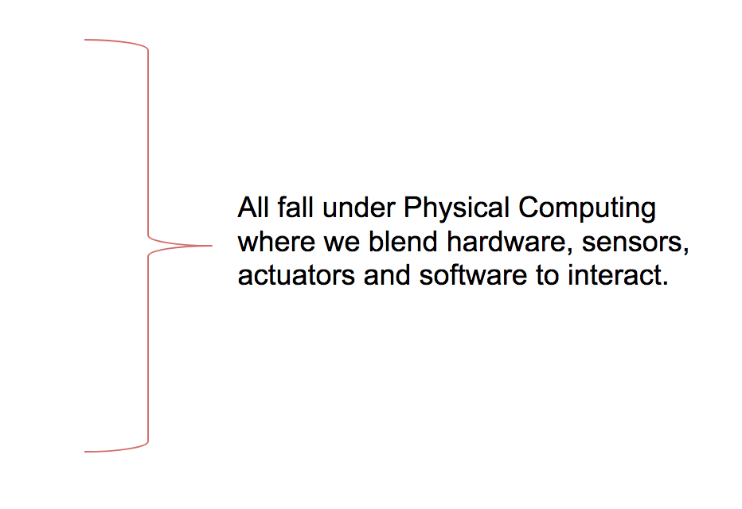
- Tangible UI (TUIS)
- Augmented reality (AR)
- Wearable computing
- Ubiquitous computing
- Robotics
- Virtual reality (VR)
- Internet of Things (IoT)
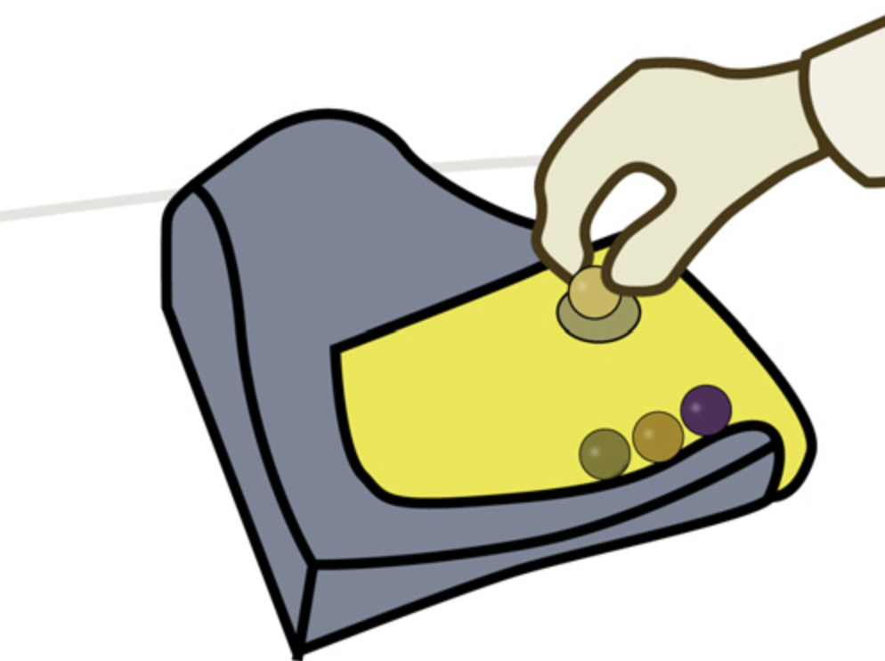
Tangible user interfaces
- Allows user to interact with physical object to control, manipulate or use digital information.
e.g. marble answering machine
e.g. reacTable, compose music with objects.
Advantages | Disadvantages |
- People already know how to interact with the world around them.
- Hand movement precision exceeds mouse and keyboard.
- Objects reduce cognitive translation.
- Easier to collaborate with others.
| - Require specialised hardware.
- Not really mobile and hard to use in different environments.
- Interactions limited to dimensions and characteristics.
- Mental and physical fatigue.
|
Classifying tangibles
- Distant embodiment → output is ‘over there’ on screen or other device.
- Environmental embodiment → output is around the users e.g. reacTable.
- Nearby embodiment → output tightly coupled to focus on input.
- Full embodiment → output / input coincide and are in the same interaction space.
Reality-based Interaction |
Environment awareness and skills: Sense and navigation with surroundings | Social awareness and skills: Sharing environments and interacting with others. |
Naive physics: Common sense about the physical world. | Body awareness and skills: Own body constraints, skill to control and coordinate. |
PC: Wearable Computing
Requirements
- In order for a computer to be considered as wearable technology, it must be:
- Eudaemonic: User considers the technology a part of them.
- Existential: User has complete control over a system.
- Ephemeral: System is always operating at some level.
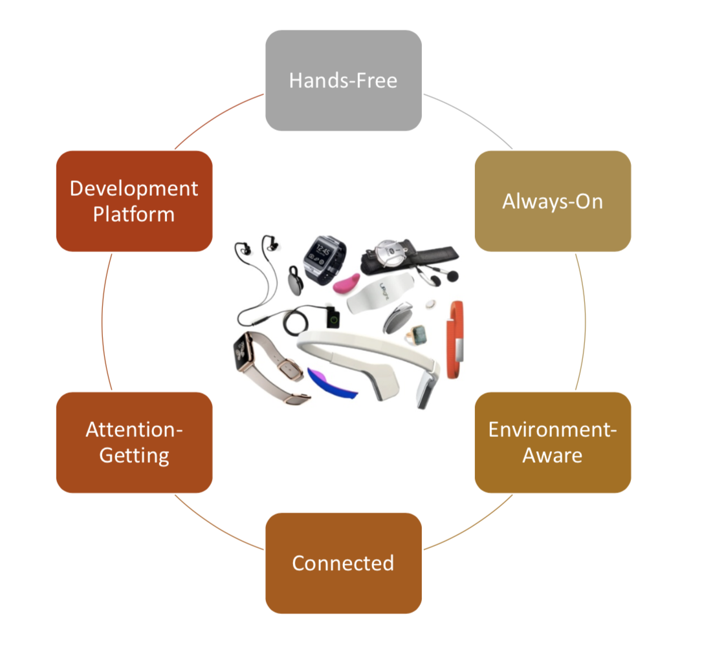
Brief history
- 1960-1990 → custom built devices during exploration stage.
- 1990-2000 → academic and military research.
- 1997 → first wearable technology conference.
- 1995 - 2005+ → first commercial uses for wearable technology.
- 2010 → consumer applications e.g. Apple Watch.
Applications
- Remembrance agent: Display information in the current context.
- AR: Enhance users’ view and perception of their surrounding environment.
- Remote collab: Convey gestures and actions onto documents.
- Maintenance: Guide workers during activities e.g. displaying voltage of machines.
Social Perceptions | Cognitive Inference |
Not everyone is comfortable with using gestures to interact with technology e.g. ‘Glasshole’ effect - people using google glass considered negatively in public. | Competing for resources (structural) e.g. two processes needing vision. Total available central processing overwhelmed by concurrent tasks (capacity) e.g. counting and adding simultaneously. |
PC: Robotics
Overview
- Robot: Physical agent that performs tasks by manipulating the physical world.
- Agent: System that is situated in some environment and is capable of autonomous action in this environment in order.
Applications |
Automatic Guided Vehicles | Transports motor blocks from one assembly station to another in manufacturing. |
Cleaning Robots | Consumer product that replaces a vacuum cleaner at homes. Uses sensors to know where it is in the environment. |
Exploration Robots | Used to search for evidence of ancient life on different planets #Mars |
Walking Robots | Pulstech developed first industrial walking robot for moving wood out of a forest. Leg coordination is automated, but navigation controlled by human. |
Levels of Autonomy
- Teleoperation: Remote-operated machines and vehicles e.g. bomb inspection.
- Semi-autonomous: Remotely commanded but not operated e.g. Mars Rovers.
- Fully-autonomous: Fully capable of automated navigation and task completion e.g. Roomba cleaning vacuum and self-driving cars.
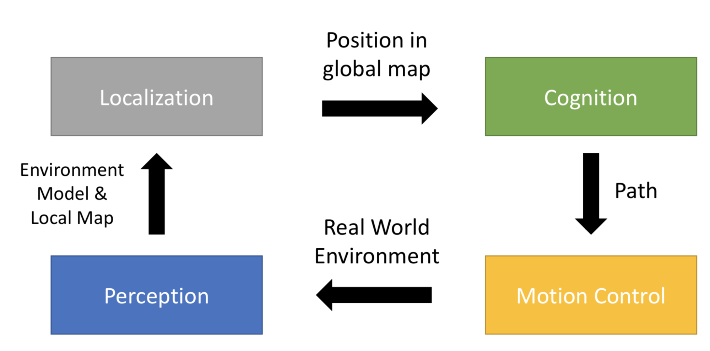
Self-driving cars
- Reduce injuries and fatalities as 90% of accidents are due to human error.
- Energy efficiency due to smoother acceleration and braking as well as smaller safety gaps leading to reduction in traffic.
- In many if not most locations, self-driving cars are not legal on public roads yet.
- Ethical concerns e.g. how should a car be programmed to act in the event of an unavoidable accident - run over a person, or save the driver?
PC: Smart Homes
Overview
- Environments that use technology to assist inhabitants by automating task components e.g.
- Optimise inhabitant productivity
- Minimise operating costs
- Improve comfort
- Simplify use of technologies
- Ensure security
- Enhance accessibility
Intelligent environment requirements
- Acquire and apply knowledge about tasks that occur in the environment.
- Automate task components that improve efficiency of inhabitant tasks.
- Provide unobtrusive human-machine interfaces.
- Adapt to changes in the environment and of the inhabitants
- Ensure privacy of the inhabitants
Applications |
Intelligent Workspaces | - Automatic note taking
- Simplified information sharing
|
Intelligent Vehicles | - Location-aware navigation systems
- Traffic-awareness
|
Smart Homes | - Item tracking and automated order for food and general items.
- Medication management for the elderly, notifying them what to take and when to take it (MedSignals).
- Wearable sensors for health monitoring with ability to notify emergency services when something is not right.
|
Challenges
- Home design and sensor layout → how many and what type of sensors.
- Management of available data → what data do we store and how is it distributed.
- Decision making → how are the tasks automated and actuators controlled.
- Inhabitant privacy → how should personal data be maintained and used.
PC: Urban Computing
Urbanisation challenges
- Energy Consumption → provide sustainable and clean energy for everyone.
- Pollution → how do we handle air, noise and physical pollution.
- Transport → how to organise buses, underground, bike lanes and car traffic.
- Social Issues → diverse neighbourhoods and providing schools, centres.
- Healthcare → dealing with aging and increasing population.
- Economic → understanding economics of cities around the world.
Enabling Technologies |
Sensors and Hardware | Collect and sample information about environment e.g. air pollution and traffic sensors. |
Network of Systems | Interconnect sensors into large network that collect and transport data sampled by sensors over heterogeneous networks, IoT devices. |
Computing Power | Cloud-based architectures where data, applications and processing done on centralised server, provides storage, power and processing e.g. Siri. |
Data Analysis | Combine different data sources to help produce insights of changes in a city or country level e.g. transport in London and how to overcome. |
Visualising | Use visualisations of data to present to larger audience creating citizen engagements including them in discussions e.g. energy consumption map |
Applications
- Urban Planning: How characteristics of certain areas affects urbanisation.
- Transportation Systems: Can predict transport habits, by knowing where people are and need to get we can learn where we should plan new routes for public transport.
- Environmental: Measure, control and handle effects of urbanisation e.g. pollution.
- Energy: How much, and which areas are consuming energy e.g. outer London uses more energy, may be due to smaller flat culture in central.
- Social Applications: Providing services to population of city to collect data e.g. Uber
Smart Citizen Kit
- Software to support data collection and online aggregation of datasets.
- Visualised in an open API allows public to view and developers to design new apps and tools on top of real-time data store.
- Allows comparison of data between different cities e.g. air pollution.
- Part of a movement to democratise access and production of data.
PC: Affordances and Design
Affordances
- Perceived: Properties of objects suggest how they should be used e.g. a chair.
- Actual: Actual actionable properties of object.
- Problems occur when difference between the two exists, designers aren’t the users.
- Designers create appropriate visual affordances via familiar icons and metaphors.
Visible constraints
- Limitations of actions possible perceived from object’s appearance.
- Restrict possible interactions, the more constraints the less opportunity for error e.g. field where user can put in any information will lead to errors in future.
Mapping
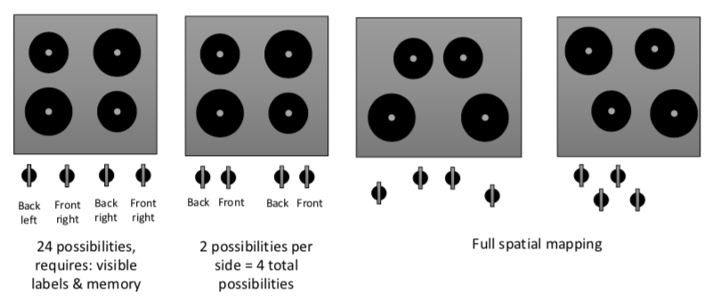
Causality
- Thing that happens immediately after action is assumed by people by action.
- False causality: Incorrect effect → invoking unfamiliar function. Invisible effect → command with no apparent result often re-entered repeatedly (void).
Transfer effects
- People transfer their learning and expectations of similar object to current objects.
- Positive: Previous learning also applies to new situation e.g. typewriter to keyboard.
- Negative: Previous learnings conflict with new situation
Conceptual model
- Users often have mental models of how things work.
- It is important for the designer to attempt and match that mental model so that users are able to easily interact with products.
PC: Universal Principles
Organising information
- Category: Similarity or relatedness.
- Time: Chronological sequence.
- Location: Geographical or spatial reference.
- Alphabet: Alphabetical sequence.
- Continuum: Magnitude
Gutenberg diagram
- Describes general pattern followed by eyes when looking at evenly distributed, homogeneous information (text).
Contour bias
- Favour object with contours over objects with sharp angles or points.
- Sharp angles stimulate the amygdala which is involved in fear processing.
Horror Vacui
- Tendency to favour filling blank spaces with objects and elements over leaving spaces blank or empty.
- Example, a shop windows with lots of items may be seen as less prestigious than one with very few items in the window.
Desire line
- Traces of use or wear that indicate preferred methods of interaction with object or environment.
- Similar to worn out paths in the real world (least effort).
- Can use heat maps to find which parts are not as desired on a website.
Expectation effect
- Halo effect: Employers rate performance of certain employees highly based on overall positive impression of those employees.
- Hawthorne effect: Employees more productive based on their belief that changes made in environment will increase their productivity.
- Pygmalion effect: Students perform better / worse based on expectation of teacher.
- Placebo effect: Patient experiences effects based on belief that treatment will work.
VIS: Introduction
Tristimulus theory
- Every visible colour can be represented by combination of three values that represent the weights of components of red, green and blue (basic primitives) due to cones in the eye.
Colour model
- Represents values for the amount of red, green and blue e.g. RGB model.
- This includes luminosity, brightness, hue, saturation and transparency.
RGB colour depth
- Number of bits used to represent a colour
- 8-bit commonly used for the internet (256 colours).
- 16-bit (high colour) and 24-bit (true colour\) are used for photo realistic images.
Alpha blending
- Fourth component that can be used to store the opacity of individual pixels.
- Require sorting to render the objects with transparent regions - determine order of objects in picture so that we can render backgrounds and foreground separately.
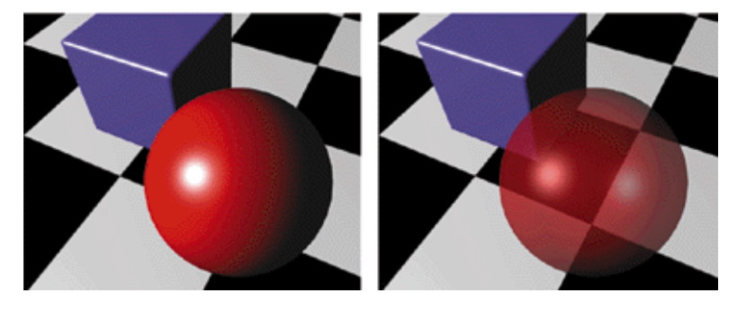
VIS: Colour Storage and Representations
Storage
- Direct: Storing unique RGB values for each pixel creates direct colour representations. When rendering image, visualisation tool looks at each pixel.
- Indirect: May use if there is a space constraint to store colour information on each pixel. Simple images and textures may not need a lot of colour depth.
- Indexed: Contain pointers to central colour index, this reduces the size of colour representations. Can point to 8 bit and 24 bit colour representation.
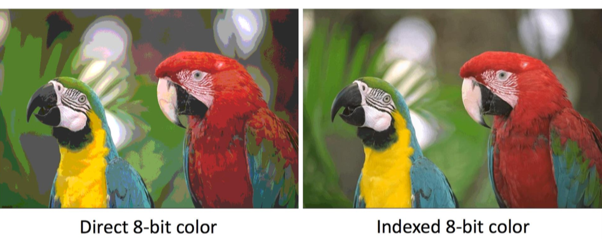
Posterization
- Often a side effect from scaling down the number of colours (but can sometimes be desirable).
- Dithering: Areas of single colour are replaced by patterns of coloured dots to produce illusion of smooth transition from one colour to another.
Models
- CMYK: Cyan, Magenta and Yellow are complementary colours to primary RGB. Model used for printing as opposed to RGB seeing as RGB mixes brightness and chromaticity.
- HSI: Explicitly decouples hue (colour type), saturation (purity of colour) and intensity (brightness of the colour).
VIS: Visual Representations
Reference model
- Raw data: Data can be presented in many formats and structures, it can have different levels of accuracy and low precision. Data can be real-time, logged etc…
- Transform data: Preprocess data to transform into more structured format so that it’s easier to use for computers. Includes: filtering, ordering, sorting, cleaning etc…
- Visual mapping: Must define which visual structure to use for data e.g. data can be used to generate a map, but also an abstract mapping for prime numbers. We define three structures based on this:
- Spatial Substrate: 2D space used for data and information visualisation, defined as any cartesian space. It is a combination of ordinal, nominal and interval data.
- Graphics Elements: Includes all shapes and objects to represent data, can use a legend in conjunction to describe relation. Properties of shape can include size, orientation, colour, texture etc.. Combination of these properties allow multivariate data (multiple dimensions of data).
- Views: Complex applications, infographics or dashboards that combine multiple visualisations to provide overview on a topic.
Designing Visual Representations
- Define the problem: User must clearly define what has to be represented.
- Explore the data: Transform data based on data types e.g. quantitative, ordinal etc...
- Dimensions of data: How many attributes does the data have.
- Data structures: Linear: Vectors, tables. Temporal: Changes in time. Geographical: Correspondence with something physical e.g. map.
- Interactions: Should the user be able to modify the data or would it be static.
VIS: Visualisation and Perception
Memory
- Sensory: Brain retains impressions of sensor signals for short periods (250-500ms). We can process some information without need to focus (pre-attentive processing).
- Short-term: Some information transferred into STM where stays from few seconds to few minutes. Limited capacity of 5 to 9 items and requires conscious effort.
- Long-term: Rehearsing or learning information leads to LTM storage. This includes meaningful associations, events, actions, or learned behaviour that is repeated. Brain stores different types of LTM memories in different areas of the brain.
- Episodic → Time, events, actions.
- Semantic → Factual information, meanings of symbols and words.
- Autobiographical → Personal experiences, knowledge about self.
- Implicit → Remember movement, objects, shapes, skills and space.
- Emotional → Used to trigger emotions.
- Working → Restore information from LTM into ‘active’ memory.
Pre-attentive processing
- Color: Strongest property, hue and intensity are processed to help people distinguish objects from surroundings. Can focus processing without need for sequential search.
- Form: Differences in shapes such as length, orientation, size can trigger pre-attentive processing e.g. out of place shape will be recognised faster.
- Spatial position: 2D position on a canvas, depth and concavity or convexity stand out from the others.
- Movement: Moving objects trigger pre-processing as it changes over time.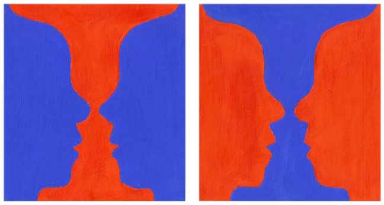
Gestalt principles
- Proximity: Close together elements perceived to form a single group.
- Similarity: Similar shape, size, colour elements perceived as to belong together.
- Closure: If a shape is not completely or space not enclosed and enough elements are present, we will perceive them as a whole figure anyway.
- Continuity: If object forms continuation of another object, beyond ending points, we perceive pieces as parts of a whole object.
- Figure and Ground: Our perception tends to separate object from its background based on visual attributes e.g. contrast, colour, size.
VIS: Visualisation and Interaction
Interaction Categories |
Select | Marking part of the visualisation as interesting, important or relevant. Used to select data directly to show details. Generalised select refers to all similar data points. |
Explore | Visualising different data configurations to discover new insights / findings. |
Reconfigure | Rearranging data visualisation to provide different perspectives e.g. sort. |
Encode | Changing visual attributes of data points to view data differently. |
Abstract | Allowing user to adjust level of detail through direct interaction e.g. zoom. |
Filter | Show data that matches certain condition allowing data narrowing. |
Connect | Show related data and highlight associations between sets or attributes. |
VIS: Multi-Screen Design
Attributes
- Mobile first: Central device used by people at center of ecosystem.
- Simultaneity: Different devices used at same time, people may start activity on one device but add remove others as they go.
- Social TV: Allow user profiles with friend and social interactions.
- Device shifting: Move content or view from one device to another.
- Complementarity: Combining devices should reduce complexity and increase usability. Should recognise each others capabilities to improve system.
Challenges |
Cross-Device Connections | People need to know what devices can be used together and what configurations can be used, must be able to opt-in and out of devices. |
Interoperability | Each platform is designed for their isolated single device perspective. |
Interaction Challenges | Mouse, touch, swipe and keyboard are single device inputs, can these basic techniques be used across heterogeneous devices? |
Privacy | Cross-device authentication to enable people to grant devices access to their personal information, handled locally or in cloud? |
Building Cross-Device Apps | New tools needed to enable cross-device support for developers and engineers. Responsive UX fails to support complex tasks across devices. |
New Technologies
- Mediating role of wearables: Study physical instrumental interaction. Can they be used to device pairing and recognition?
- Tracking people and devices in space: Better input for machine learning. For example pointing at a specific point in space.
- Recombinant Computing: Combines screens into larger interactive surfaces.